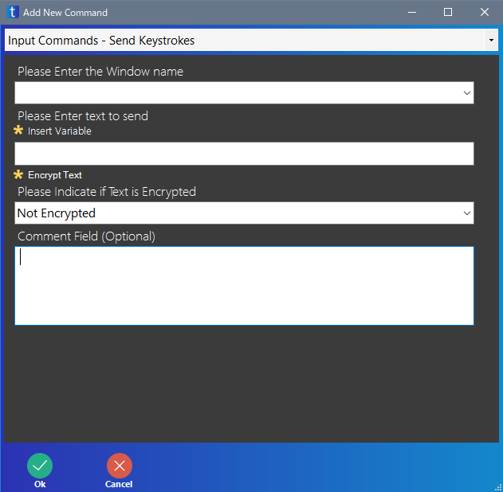
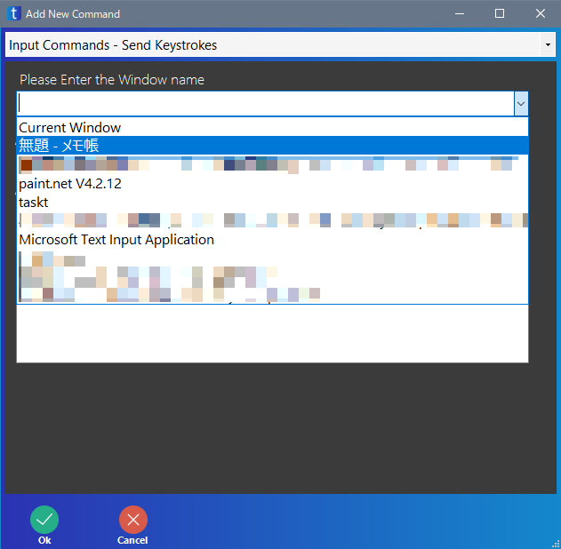
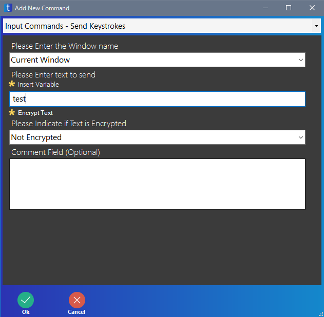
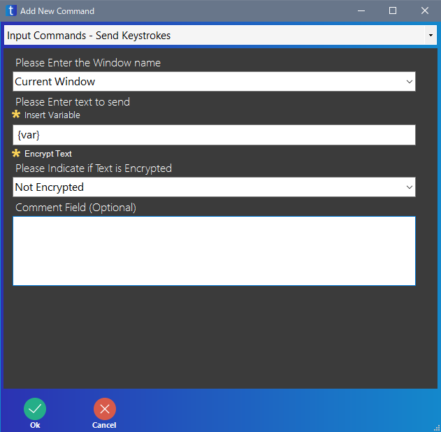

Send Keystrokes
ソフト・画面にキーボード入力を送ります。
通常の文字入力だけではなく、変数の値を送ったり、ショートカットキーを送ることもできます。

| 項目 | 意味 |
|---|---|
| Please Enter the Window name | キーボード入力を送るソフト・画面を指定します 「Current Window」を指定すると、現在一番手前にあるソフト・画面へ送ります |
| Please Enter text to send | キーボード入力の内容を指定します |
| Encrypt Text | キーボード入力を暗号化するかを指定します |
| Comment Field (Optional) | コメントを入力します 入力しなくてもよいです |
Please Enter the Window name
Please Enter the Window name ではキーボード入力を送るソフト・画面を指定します。
右端の ▼ をクリックすると、ソフト・画面の一覧が表示されます。
キーボード入力を送ると、そのソフト・画面は一番手前に来ることが多いので、1 回目はソフト・画面名を指定し、それ以降は「Current Window」を指定すれば良いでしょう。
ソフト・画面の名前は、全角・半角、大文字・小文字などを区別しますので、正確に入力してください。ただし、ソフト・画面名の一部だけを入力しても、指定することができます。
存在しないソフト・画面を指定するとエラーになります。
ここの項目を空欄にしてもエラーにはなりませんが、キーボード入力はどこにも送られません。
モーダルフォームが表示されている場合、モーダルフォームの名前でも、ソフト・画面の名前でもどちらでも良いです。

Please Enter the text to send
ソフト・画面に送るキーボード情報を指定します。
文章のような文字入力を送る場合、下のようにします。この例では「test」という文字を送っています。

変数の値を送るには、変数名を { } で囲みます。下の例では、変数 var の値を送ります。

文字以外のキーボード入力を送るには、下のように指定します。下の例では Enter キーを押したことになります。
キーの名前は、このページを参照してください。

Ctrl+S のようなショートカットキーを入力するには、下のように指定します。
ショートカットキーの入力方法は、このページを参照してください。
Encrypt Text
キーボード入力を暗号化するかどうかの設定らしいです。
詳しいことはよくわかりません。
| 項目 | 意味 |
|---|---|
| Not Encrypted | 暗号化しない |
| Encrypted | 暗号化する |
Encrypt Text はバージョン 3.4.0.0 で追加されました。